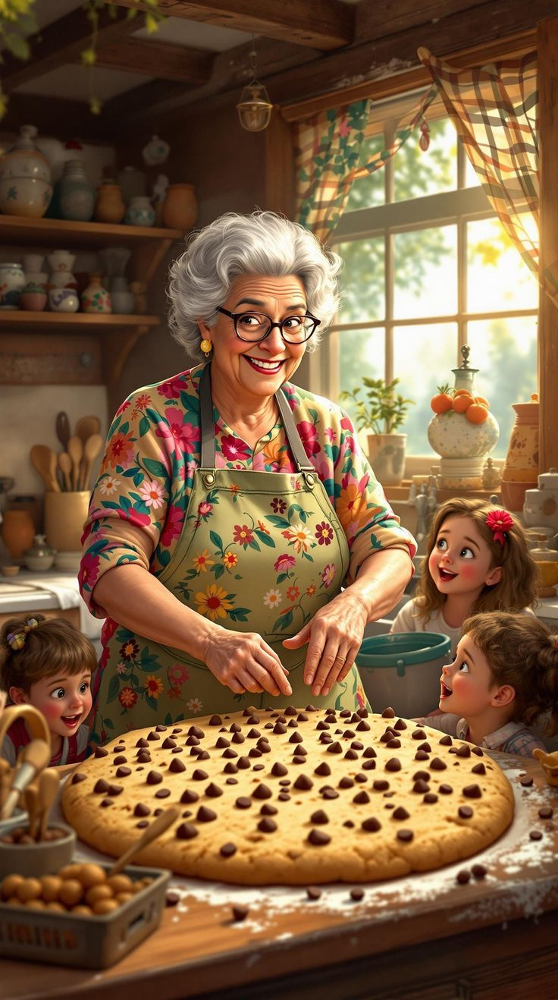

EST. COIMBATORE
How We Started
A kitchen table idea.
A grandmother's recipe.
Earthly Basket started in a home kitchen in Coimbatore, recreating the millet porridges and traditional meal mixes our families grew up on — because store shelves were full of "healthy" food that tasted nothing like it. We tested every recipe on our own families first, and we still do.